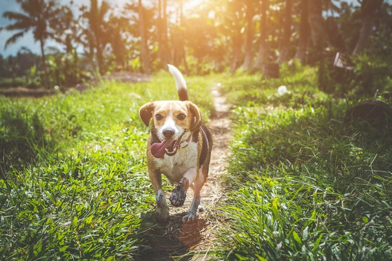

Today's Headlines:

The origin of the domestic dog includes the dog's genetic divergence from the wolf, its domestication, and its development into dog types and dog breeds. The dog is a member of the genus Canis, which forms part of the wolf-like canids, and was the first species and the only large carnivore to have been domesticated.[2][3] Genetic studies comparing dogs with modern wolves show reciprocal monophyly (separate groups), which implies that dogs are not genetically close to any living wolf and that their wild ancestor is extinct.[4][2] An extinct Late Pleistocene wolf may have been the ancestor of the dog,[3][1] with the dog's similarity to the extant grey wolf being the result of genetic admixture between the two.
Read More
Dognapping is the crime of taking a dog from its owner with the intention of demanding a ransom. The word is derived from the term kidnapping.
Historically in the United States, dogs had been stolen and sold on for medical research, but the introduction of the Animal Welfare Act of 1966 reduced these occurrences. The profit available to dognappers varies based upon the value of the dog or the amount that its original owners are willing to pay as ransom. Dog organizations recommend the microchipping of dogs in order to facilitate an animal's return to its rightful owners.
Read More

The scientific evidence is mixed as to whether companionship of a dog can enhance human physical health and psychological wellbeing.[196] Studies suggesting that there are benefits to physical health and psychological wellbeing[197] have been criticised for being poorly controlled,[198] and finding that "the health of elderly people is related to their health habits and social supports but not to their ownership of, or attachment to, a companion animal." Earlier studies have shown that people who keep pet dogs or cats exhibit better mental and physical health than those who do not, making fewer visits to the doctor and being less likely to be on medication than non-guardians.[199]
Read More
The scientific evidence is mixed as to whether companionship of a dog can enhance human physical health and psychological wellbeing.[196] Studies suggesting that there are benefits to physical health and psychological wellbeing[197] have been criticised for being poorly controlled,[198] and finding that "the health of elderly people is related to their health habits and social supports but not to their ownership of, or attachment to, a companion animal." Earlier studies have shown that people who keep pet dogs or cats exhibit better mental and physical health than those who do not, making fewer visits to the doctor and being less likely to be on medication than non-guardians.[199]
Read More